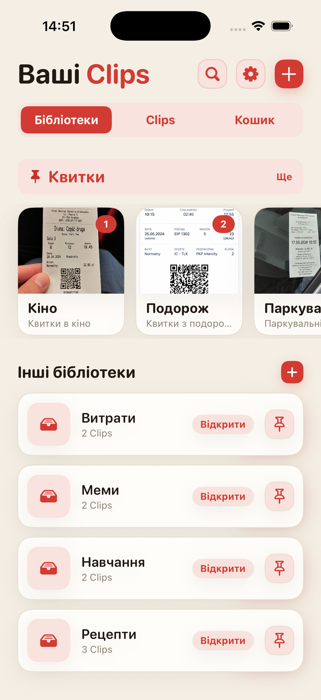
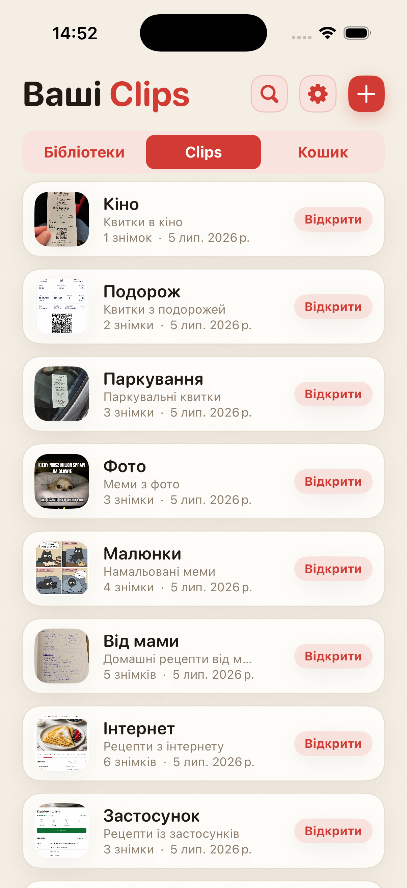
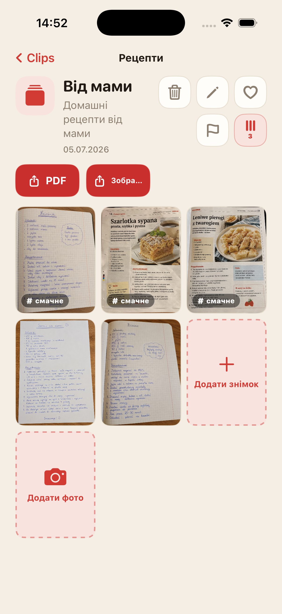
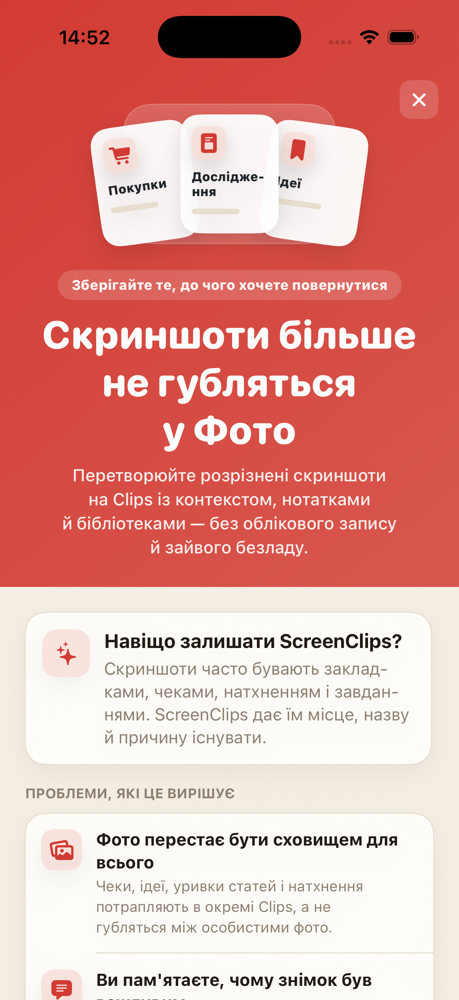

Скріншот тоне в загальній стрічці
Зберігаєш щось важливе, а за тиждень гортаєш галерею так, ніби переглядаєш архів справ.
Перетворюй розрізнені скріншоти на Кліпи з назвою, нотаткою і власною бібліотекою. Без акаунта, без хмари й без щоденного полювання в галереї.

Чеки, рецепти, квитки, ідеї та фрагменти статей губляться між селфі, мемами й випадковими знімками. Ми маємо хмару, але все одно не можемо швидко знайти скрін з адресою готелю.
Зберігаєш щось важливе, а за тиждень гортаєш галерею так, ніби переглядаєш архів справ.
Самого зображення часто замало. ScreenClips дає додати назву й нотатку.
Покупки, робота, подорожі й навчання заслуговують окремих місць, а не однієї великої купи у Фотографіях.
Відокрем рецепти, чеки, квитки, дослідження, навчальні матеріали або будь-що, до чого хочеш повернутися.
Кліп збирає все навколо однієї теми. У нього є назва, опис і власні скріншоти.
Відкрий бібліотеку, вибери Кліп — і потрібне вже на місці. Без довгих прогулянок галереєю.

ScreenClips не намагається вгадати все за тебе. Він дає просту структуру: бібліотека для теми, Кліп для конкретної справи, всередині — скріншоти й фото.
Збирай матеріали всередині Кліпів і доповнюй їх, коли тема росте.
Коли Кліп треба надіслати або зберегти поза застосунком, перетвори його на охайний файл.
Там, де раніше були тільки прокручування й зітхання, з'являються обране, прапорці й порядок.

ScreenClips працює локально. Щоб навести порядок, не потрібно створювати акаунт або віддавати чеки, нотатки й плани сторонньому сервісу.
Premium не ускладнює застосунок. Він просто дає більше простору для бібліотек, Кліпів і скріншотів. Ціну показує App Store.
Завантажити зApp Store
Ні. Якщо прибрати зображення з Кліпа, оригінал у Фотографіях не видаляється.
Так. ScreenClips створений як локальний органайзер, що працює на твоєму iPhone.
Ні. ScreenClips не вимагає акаунта, щоб упорядковувати твої Кліпи.
Так. Якщо фото належить до конкретного Кліпа, його можна додати разом зі скріншотами.
ScreenClips упорядковує те, що ти зберігаєш “на потім”. І цього разу “потім” справді можна знайти.
Завантажити зApp Store